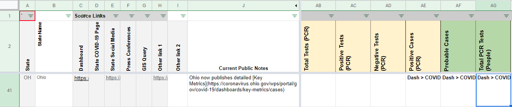
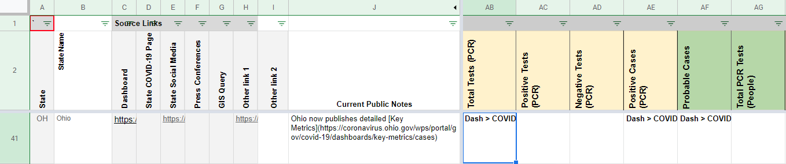
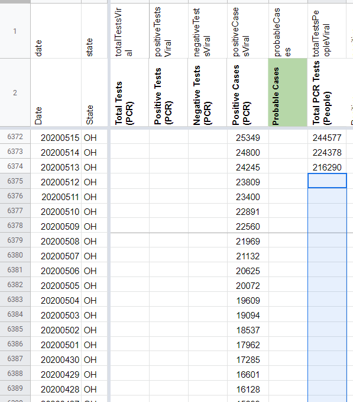
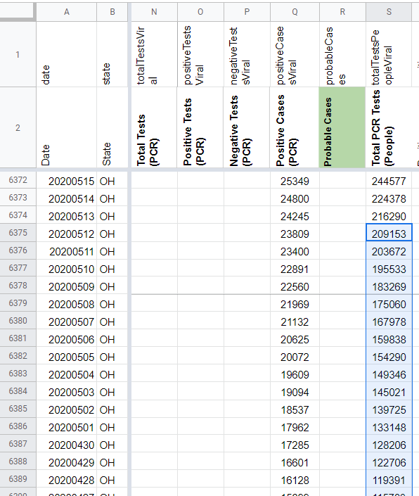
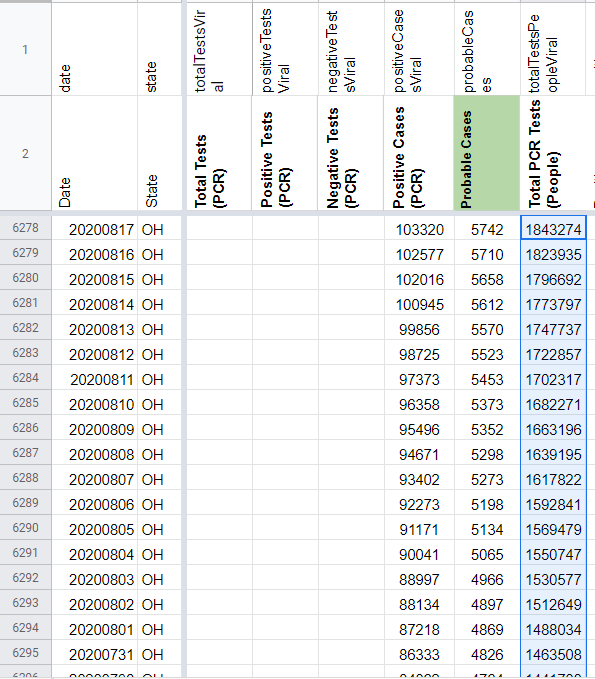
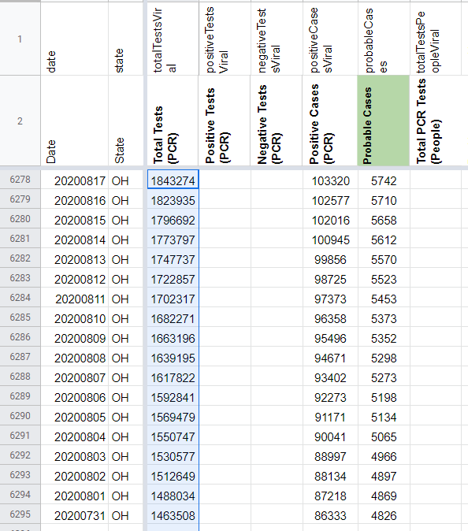

[OH] Backfill total test numbers prior to 5/13
Issue number 760
the-daniel-lin opened this issue on August 13, 2020 at 8:01 am
Labels Historical Data not stale Backfill
State or US: Ohio
Describe the problem CTP’s current values for Total PCR Tests (People) only goes back until 5/13. We can use the secondary screenshots to backfill to 4/20 (inclusive). OH reports the value as “Total Tested in Ohio.”
OH’s total test units are unclear, and we’re performing outreach to confirm whether or not OH reports total testing numbers in specimens or people. Until we hear back from outreach, we are defaulting to recording in Total Tests (PCR).
We need to:
- Backfill through 4/20
- Move from Total PCR Tests (People) to Total Tests (PCR)
- Edit States Matrix to reflect changes.
Link to data source State Screenshots
STATES MATRIX BEFORE:

STATES MATRIX AFTER:

BEFORE BACKFILL:

AFTER BACKFILL:

Backfill values: 209153 203672 195533 183269 175060 167978 159838 154290 149346 145021 139725 133148 128206 122706 119391 115783 111379 107109 102325 97998 94239 90839 86989
BEFORE MOVE:

AFTER MOVE:
